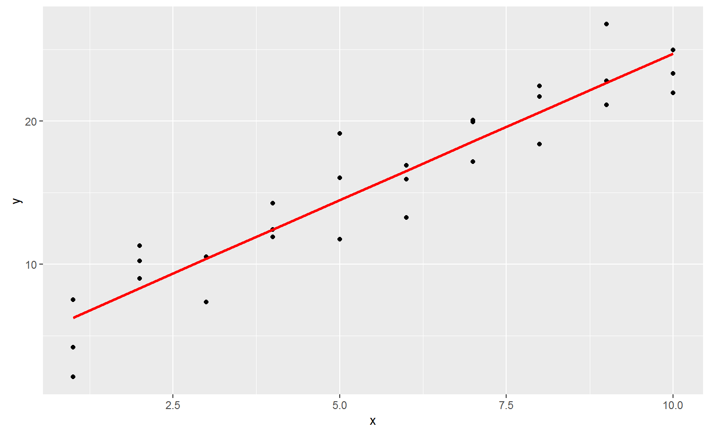
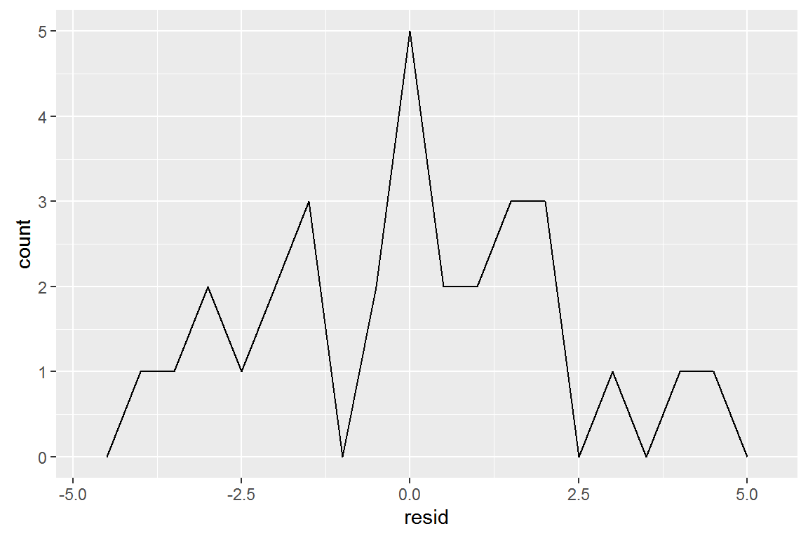
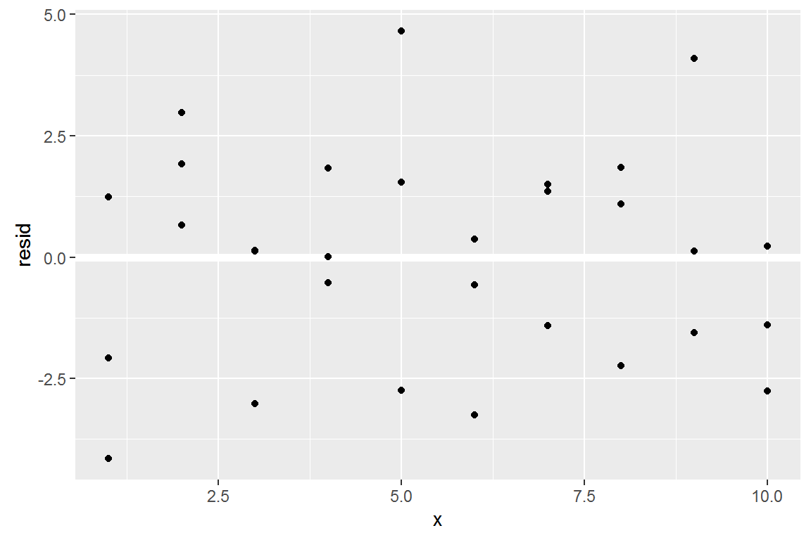
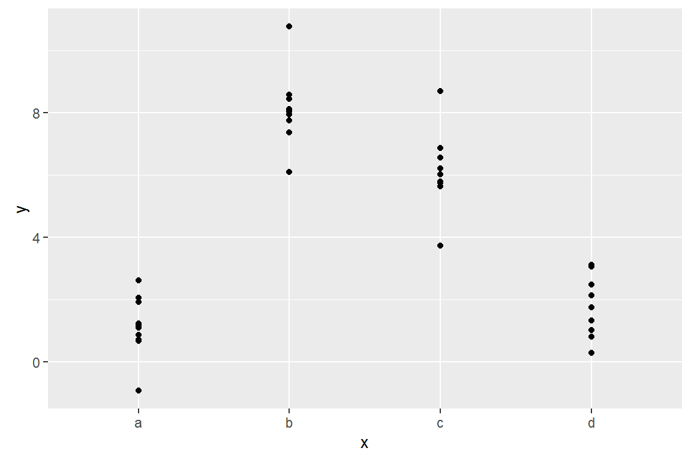
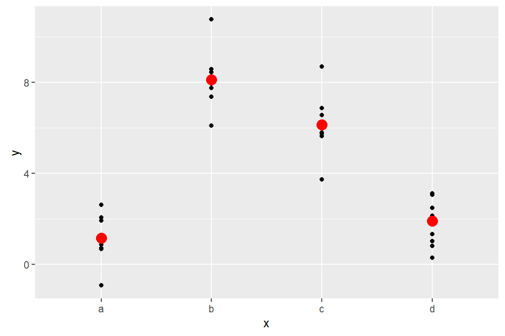

Modeling Basics

Why model?
- Modeling helps you identify trends, make predictions, and perform statistical tests
- Today we will only touch on modeling and do so in the context of tools we have already learned
We will be going over Chapter 23 of R for Data Science by Garrett Grolemund and Hadley Wickham almost verbatim.
Modeling for EDA
- Use models to partition data into patterns and residuals
- Strong patterns will hide subtler trends, use models to peel back layers of structure as you explore a dataset
Very, very, very basics of how models work
First, define a family of models that express a precise, but generic, pattern that you want to capture.
- For example, a straight line expressed
y = a_1 * x + a_2
x and y are known variable from your data and a_1 and a_2 are parameters that can vary to capture different patterns
Very, very, very basics of how models work
Next, generate a fitted model by finding the model from the family that is the closest to your data.
- This takes the generic model family and makes it specific, like
y = 3 * x + 7.
A fitted model is just the closest model from a family of models. This does not necessarily mean it is good and does not imply the model is “true”.
Prerequisites
Today we’ll use the modelr package which wraps around base R’s modelling functions to make them work naturally in a pipe.
library(tidyverse)
library(modelr)
options(na.action = na.warn)
A simple model
Lets take a look at the simulated dataset sim1. It contains two continuous variables, x and y. Let’s plot them to see how they’re related:
ggplot(sim1, aes(x, y)) +
geom_point()

A simple model
In this case, the relationship looks linear, i.e. y = a_0 + a_1 * x. Let’s start by getting a feel for what models from that family look like by randomly generating a few and overlaying them on the data. 
A simple model

Most of these models are very bad. If we can quantify the distance between the data and each model, we can get a better idea of which models are better.
One place to start is to find the vertical distance between each point and the model, as in the following diagram.

This distance is the difference between the y value given by the model, and the actual y value in the data.
To compute this distance, we first turn our model family into an R function. This takes the model parameters and the data as inputs, and gives values predicted by the model as output:
model1 <- function(a, data) {
a[1] + data$x * a[2]
}
model1(c(7, 1.5), sim1)
## [1] 8.5 8.5 8.5 10.0 10.0 10.0 11.5 11.5 11.5 13.0 13.0 13.0 14.5 14.5
## [15] 14.5 16.0 16.0 16.0 17.5 17.5 17.5 19.0 19.0 19.0 20.5 20.5 20.5 22.0
## [29] 22.0 22.0
Next, we need some way to compute an overall distance between the predicted and actual values. In other words, the plot above shows 30 distances: how do we collapse that into a single number?
We will use the “root-mean-squared deviation”. We compute the difference between actual and predicted, square them, average them, and the take the square root.
measure_distance <- function(mod, data) {
diff <- data$y - model1(mod, data)
sqrt(mean(diff ^ 2))
}
measure_distance(c(7, 1.5), sim1)
## [1] 2.665212
purrr
Now we can use purrr to compute the distance for all the models defined above. We need a helper function because our distance function expects the model as a numeric vector of length 2.
sim1_dist <- function(a1, a2) {
measure_distance(c(a1, a2), sim1)
}
models <- models %>%
mutate(dist = purrr::map2_dbl(a1, a2, sim1_dist))
models
## # A tibble: 250 × 3
## a1 a2 dist
## <dbl> <dbl> <dbl>
## 1 -1.862446 -1.887522 30.041522
## 2 -13.060192 -2.291445 43.068437
## 3 25.709318 -3.996407 21.093813
## 4 38.056373 -3.500355 16.422965
## 5 -6.607000 1.205726 15.813099
## 6 -8.747213 -2.877722 42.559429
## 7 -11.359571 3.159386 10.230428
## 8 -9.494538 3.888237 6.739263
## 9 -4.241306 4.442809 8.584836
## 10 36.646607 2.272369 33.713600
## # ... with 240 more rows
Next, let’s overlay the 10 best models on to the data. The models are colored by -distto make sure that the best models (i.e. the ones with the smallest distance) get the brighest colours.

We can also think about these models as observations, and visualising with a scatterplot of a1 vs a2, again coloured by -dist.

Grid search
Instead of trying lots of random models, we could be more systematic and generate an evenly spaced grid of points (this is called a grid search). Parameters of the grid were roughly picked by looking at where the best models were in the previous plot.
Grid search
grid <- expand.grid(
a1 = seq(-5, 20, length = 25),
a2 = seq(1, 3, length = 25)
) %>%
mutate(dist = purrr::map2_dbl(a1, a2, sim1_dist))

When you overlay the best 10 models back on the original data, they all look pretty good:

optim()
best <- optim(c(0, 0), measure_distance, data = sim1)
best$par
## [1] 4.222248 2.051204

Visualizing models
- Predictive models provide predicted data (obviously)
- These data can be added to a dataframe and then treated like any other data
Predictions
To visualise the predictions from a model, we start by generating an evenly spaced grid of values that covers the region where our data lies. The easiest way to do that is to use modelr::data_grid(). Its first argument is a data frame, and for each subsequent argument it finds the unique variables and then generates all combinations:
grid <- sim1 %>%
data_grid(x)
grid
## # A tibble: 10 × 1
## x
## <int>
## 1 1
## 2 2
## 3 3
## 4 4
## 5 5
## 6 6
## 7 7
## 8 8
## 9 9
## 10 10
Predictions
Next we add predictions. We’ll use modelr::add_predictions() which takes a dataframe and a model. It adds the predictions from the model to a new column in the dataframe:
## (Intercept) x
## 4.220822 2.051533
grid <- grid %>%
add_predictions(sim1_mod)
grid
## # A tibble: 10 × 2
## x pred
## <int> <dbl>
## 1 1 6.272355
## 2 2 8.323888
## 3 3 10.375421
## 4 4 12.426954
## 5 5 14.478487
## 6 6 16.530020
## 7 7 18.581553
## 8 8 20.633087
## 9 9 22.684620
## 10 10 24.736153
(You can also use this function to add predictions to your original dataset.)
ggplot(sim1, aes(x)) +
geom_point(aes(y = y)) +
geom_line(aes(y = pred), data = grid, colour = "red", size = 1)

Residuals
The flip-side of predictions are residuals. The predictions tells you the pattern that the model has captured, and the residuals tell you what the model has missed. The residuals are just the distances between the observed and predicted values that we computed above.
Residuals
We add residuals to the data with add_residuals(), which works much like add_predictions(). Note, however, that we use the original dataset, not a manufactured grid. This is because to compute residuals we need actual y values.
sim1 <- sim1 %>%
add_residuals(sim1_mod)
sim1
## # A tibble: 30 × 3
## x y resid
## <int> <dbl> <dbl>
## 1 1 4.199913 -2.072442018
## 2 1 7.510634 1.238279125
## 3 1 2.125473 -4.146882207
## 4 2 8.988857 0.664969362
## 5 2 10.243105 1.919217378
## 6 2 11.296823 2.972935148
## 7 3 7.356365 -3.019056466
## 8 3 10.505349 0.129928252
## 9 3 10.511601 0.136179642
## 10 4 12.434589 0.007634878
## # ... with 20 more rows
Residuals
Drawing a frequency polygon helps us understand the spread of the residuals:
ggplot(sim1, aes(resid)) +
geom_freqpoly(binwidth = 0.5)

You’ll often want to recreate plots using the residuals instead of the original predictor.
ggplot(sim1, aes(x, resid)) +
geom_ref_line(h = 0) +
geom_point()

This looks like random noise, suggesting that our model has done a good job of capturing the patterns in the dataset.
model_matrix
Takes a dataframe and a formula and returns a tibble that defines the model equation: each column in the output is associated with one coefficient in the model.
df <- tribble(
~y, ~x1, ~x2,
4, 2, 5,
5, 1, 6
)
model_matrix(df, y ~ x1)
## # A tibble: 2 × 2
## `(Intercept)` x1
## <dbl> <dbl>
## 1 1 2
## 2 1 1
The model matrix grows in an unsurprising way when you add more variables to the the model:
model_matrix(df, y ~ x1 + x2)
## # A tibble: 2 × 3
## `(Intercept)` x1 x2
## <dbl> <dbl> <dbl>
## 1 1 2 5
## 2 1 1 6
Categorical variables
Generating a function from a formula is straight forward when the predictor is continuous, but things get a bit more complicated when the predictor is categorical. Imagine you have a formula like y ~ sex, where sex could either be male or female. It doesn’t make sense to convert that to a formula like y = x_0 + x_1 * sex because sex isn’t a number - you can’t multiply it! Instead what R does is convert it to y = x_0 + x_1 * sex_male where sex_male is one if sex is male and zero otherwise:
Categorical variables
Here’s the sim2 dataset from modelr:
ggplot(sim2) +
geom_point(aes(x, y))

Categorical variables
We can fit a model to it, and generate predictions:
mod2 <- lm(y ~ x, data = sim2)
grid <- sim2 %>%
data_grid(x) %>%
add_predictions(mod2)
grid
## # A tibble: 4 × 2
## x pred
## <chr> <dbl>
## 1 a 1.152166
## 2 b 8.116039
## 3 c 6.127191
## 4 d 1.910981
Effectively, a model with a categorical x will predict the mean value for each category:
ggplot(sim2, aes(x)) +
geom_point(aes(y = y)) +
geom_point(data = grid, aes(y = pred), colour = "red", size = 4)
